Analiza rješenja · JOI Spring Camp 2026 · Dan 3
Skupljanje pečata 5
O ovom članku
Tekst je prijevod službene japanske prezentacije rješenja, preoblikovan u članak. Slajdovi su ugrađeni kao slike; natpis pod svakim slajdom je prijevod teksta na njemu. Dijelovi označeni kao trenerska napomena nisu u izvornoj prezentaciji — dodani su da popune korake koje slajdovi preskaču ili samo skiciraju.
Slajdovi
Zadatak
izvorni slajdovi 1–4
-
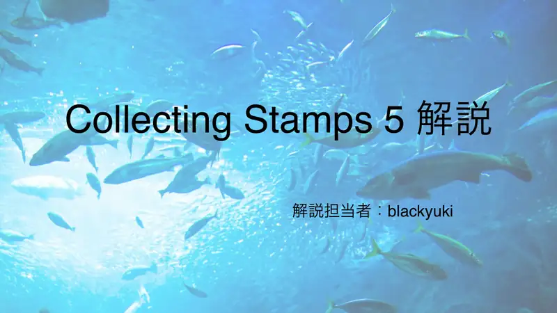
1Naslov; blackyuki. -

2Pregled. -
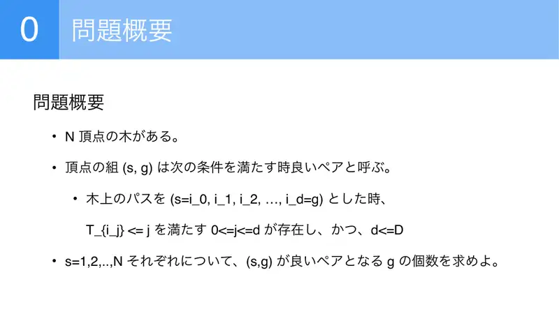
3$(s,g)$ je dobar par ako na putu $s=i_0,\dots,i_d=g$ postoji $j$ s $T_{i_j}\le j$ i $d\le D$; za svaki $s$ prebroji dobre $g$. -
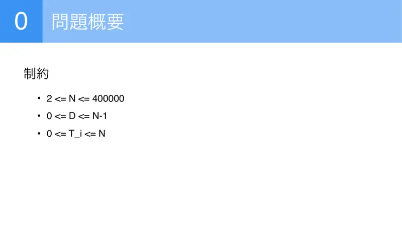
4$N\le4\cdot10^5$, $D\le N-1$, $T_i\le N$.
← → tipke ili klik na sliku
Mali podzadaci 31 bod
Koraci algoritma
D≤1, N≤3000, put
izvorni slajdovi 5–17
-
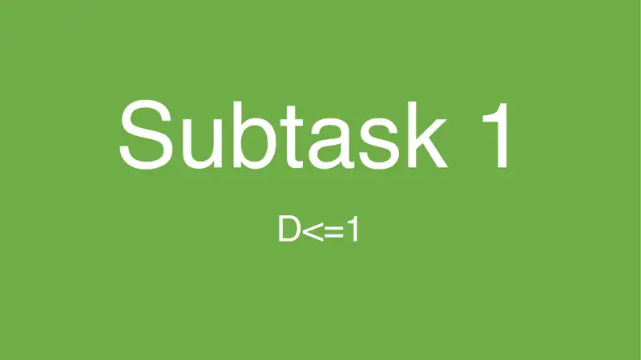
5Podzadatak 1: $D\le1$. -
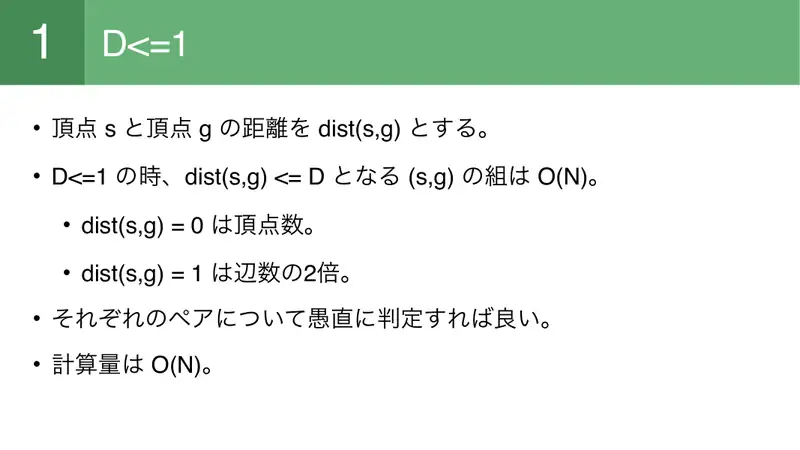
6Parova s $\mathrm{dist}\le1$ je $O(N)$ ($N$ + dvostruki broj bridova); provjeri svaki; $O(N)$. -
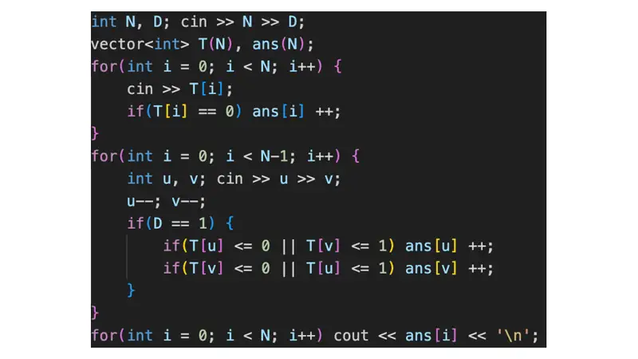
7Slika. -
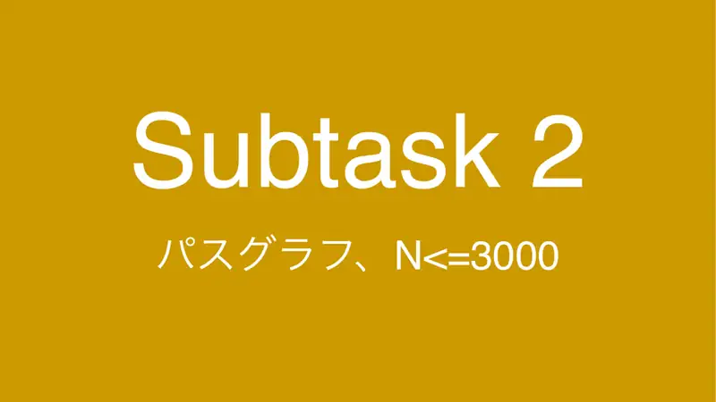
8Podzadatak 2: put, $N\le3000$. -
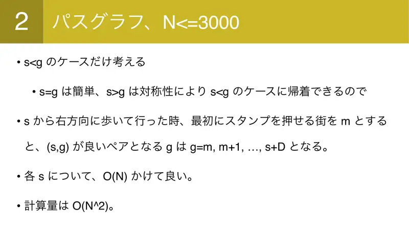
9Samo $s\lt g$ (simetrija); $m$ = prvi grad desno od $s$ gdje se može udariti pečat; dobri $g$ su $m,\dots,s+D$; $O(N^2)$. -
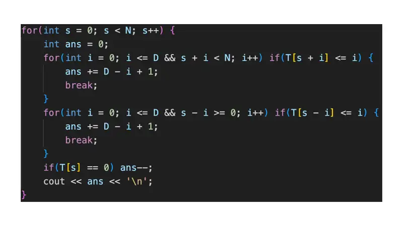
10Slika. -
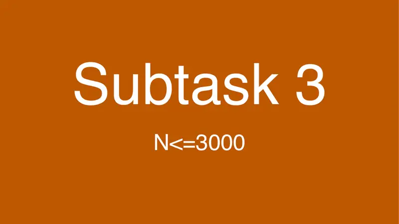
11Podzadatak 3. -
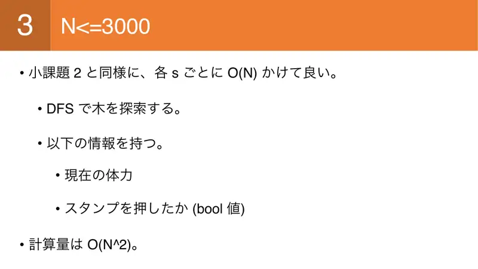
12DFS iz svakog $s$ s trenutačnom izdržljivošću i zastavicom „pečat udaren”; $O(N^2)$. -
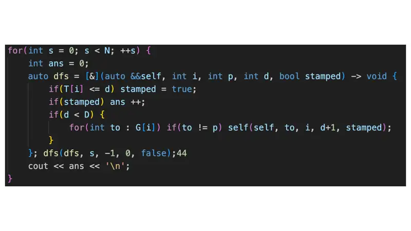
13Slika. -
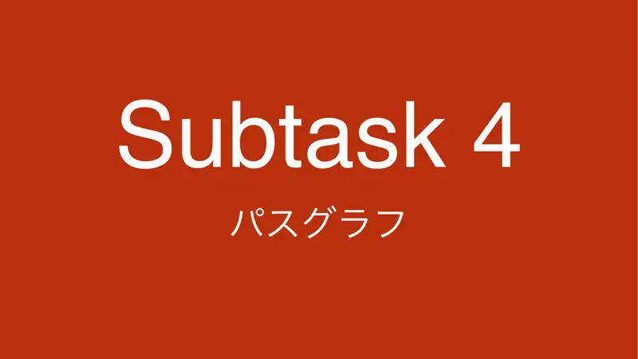
14Podzadatak 4: put. -
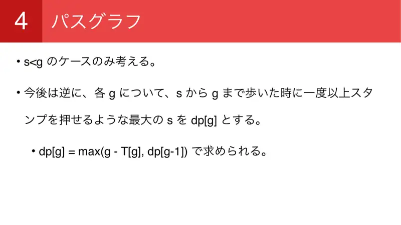
15Za svaki $g$: $dp[g]$ = najveći $s$ iz kojeg se do $g$ udari pečat; $dp[g]=\max(g-T_g,dp[g-1])$. -
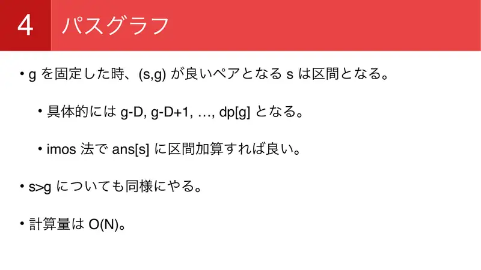
16Za fiksni $g$ dobri $s$ su interval $g-D..dp[g]$; imos na $\mathrm{ans}[s]$; simetrično; $O(N)$. -
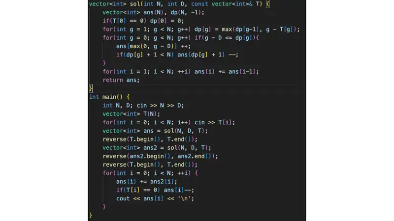
17Slika.
← → tipke ili klik na sliku
Puno rješenje 100 bodova
Koraci algoritma
Centroidna dekompozicija
izvorni slajdovi 18–25
-
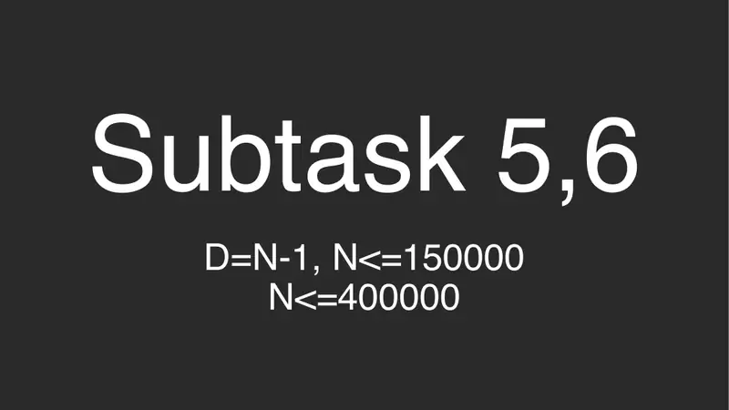
18Podzadaci 5, 6. -
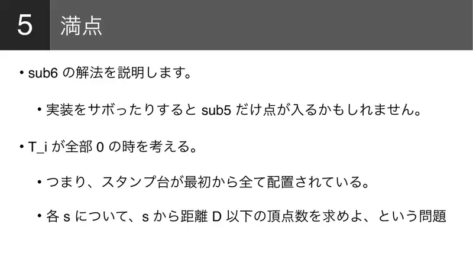
19Opisuje se rješenje za podzadatak 6; ako je $T\equiv0$: za svaki $s$ broj vrhova na udaljenosti $\le D$. -
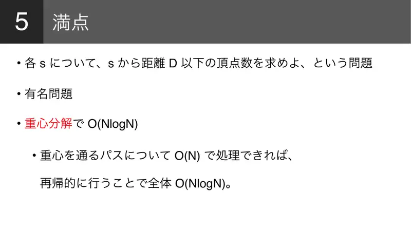
20Poznat zadatak: centroidna dekompozicija, $O(N\log N)$ — putove kroz centroid obradi u $O(N)$. -
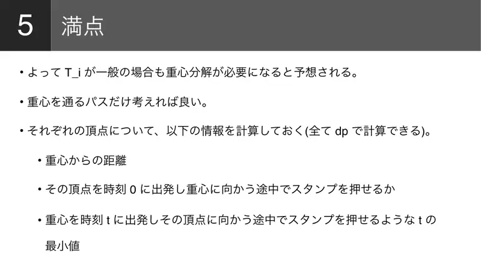
21Općenito isto; za svaki vrh: udaljenost do centroida, može li se udariti pečat krećući iz njega u trenutku 0 prema centroidu, i najmanji $t$ takav da se krećući iz centroida u $t$ prema njemu udari pečat — sve DP. -
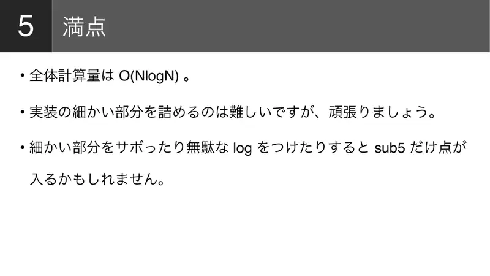
22Ukupno $O(N\log N)$; detalji su zahtjevni; aljkavost ili dodatni log daju samo podzadatak 5. -

23Raspodjela bodova. -
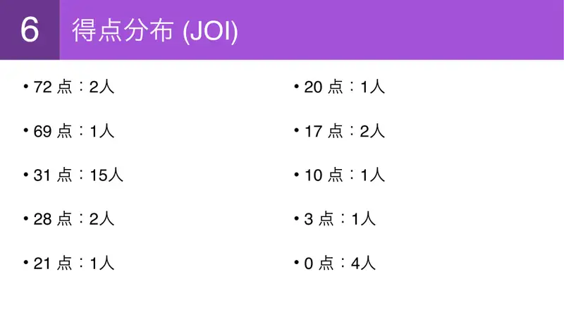
24JOI: 72: 2, 69: 1, 31: 15, 28: 2, 21: 1, 20: 1, 17: 2, 10: 1, 3: 1, 0: 4. -
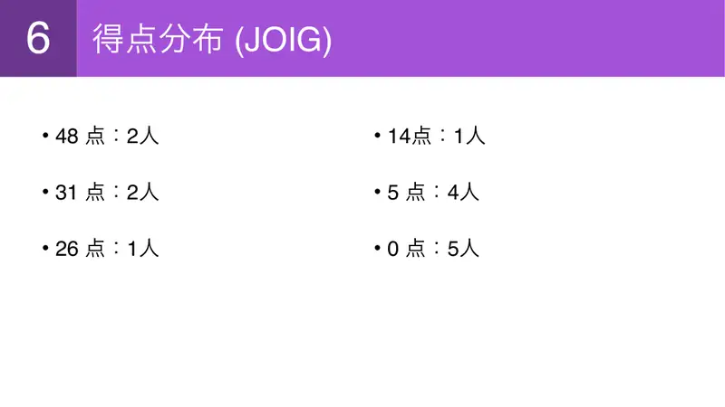
25JOIG: 48: 2, 31: 2, 26: 1, 14: 1, 5: 4, 0: 5.
← → tipke ili klik na sliku
Sažetak
- Uvjet po putu razbij na $P(s)$ (prije centroida) i $a\ge m(g)$ (poslije).
- Za fiksni $g$ dobri $a$ su interval ⇒ razlikovno polje po komponenti, $O(N\log N)$.